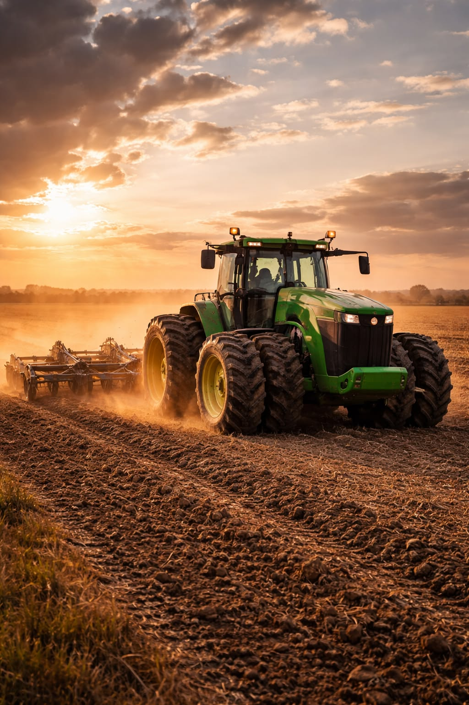
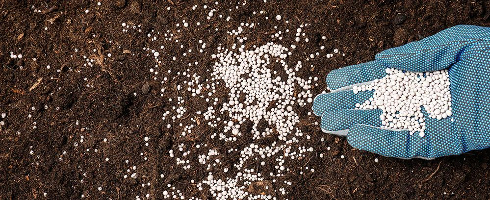
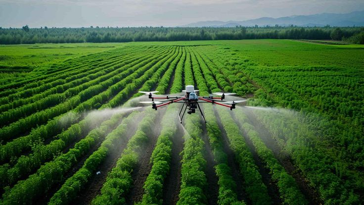
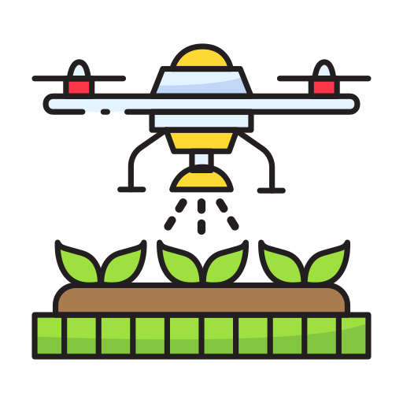

Home / Agricultural Inputs
Agricultural Inputs
Seeds, Fertilizers, Pesticides & Machinery — Everything Your Land Needs
Complete Agricultural Input Solutions
Since 1923, companies like BayWa have proven that the link between farmers and food producers runs through quality agricultural inputs. At Griland Egypt, we carry that same philosophy — providing farmers, landowners, and operators with everything required to run a productive, sustainable, and profitable agricultural operation. From certified seeds and precision fertilizers to crop protection products and heavy-duty machinery, we import and supply the full spectrum of agricultural inputs from trusted international partners across Europe and Asia.
Our agricultural inputs are sourced from globally recognized manufacturers and meet international quality standards including ISO 9001, GlobalG.A.P., and FDA certification — ensuring every input you receive is traceable, compliant, and proven.

Four Pillars of Agricultural Input

Certified Seeds & Seedlings
High-yield, disease-resistant seeds tailored for Egyptian soil and climate. Verified origins from top global breeders.
Vegetable Seeds
A wide range of hybrid and non-hybrid vegetable seeds resistant to diseases, viruses, and heat. Our seeds cover major crops including tomatoes, peppers, cucumbers, and leafy greens — all certified and tested for Egyptian and regional climates.
Fruit Seeds & Seedlings
Premium fruit crop varieties including grapes (Superior & Seedless Flame), mangoes, citrus, and stone fruits. Our fruit seeds are sourced from certified European breeders and tested for high-yield performance.
Field Crop Seeds
Certified seeds for wheat, corn, barley, sorghum, and other staple field crops. Non-hybrid and hybrid varieties available, with documented performance data across Egyptian soil conditions.

Advanced Plant Nutrition
Organic and chemical fertilizers, micro-nutrients, and bio-stimulants crafted to maximize your crop's biological potential.
NPK Fertilizers
Complete NPK blends combining Nitrogen, Phosphorus, and Potassium — the three core macronutrients for crop growth. Our NPK formulations are calibrated for Egyptian soils and available in granular and liquid forms.
Amino Acids & Humic Acid
Griland's unique fertilizer blend includes growth regulators, amino acids, and humic acid — working together to raise production efficiency and crop quality even on poor and newly reclaimed land.
Micronutrient Blends
Chelated micronutrient fertilizers including zinc, iron, manganese, and boron. Designed to correct deficiencies and optimize plant health across all crop types and soil profiles.
Liquid Fertilizers
Ready-to-apply liquid formulations for foliar feeding and fertigation systems. Ideal for high-value crops requiring precise, fast-acting nutrition at critical growth stages.
Organic Fertilizers
Bio-based organic fertilizers including compost concentrates, vermi-compost, and manure-based formulations. Supporting organic farming certification and sustainable soil management.
Soil Conditioners
Products that improve soil structure, water retention, and microbial activity. Including bio-stimulants and natural extracts that enhance long-term soil productivity.

Complete Crop Protection
Herbicides, fungicides, and integrated pest management (IPM) solutions to safeguard your investment from planting to harvest.
Fungicides
Systemic and contact fungicides for late blight, downy mildew, powdery mildew, and fungal complexes. Includes Colvid 25% EC (Difenoconazole 25%) and a wide range of preventive and curative products.
Insecticides
Broad-spectrum and selective insecticides targeting sucking pests, leaf feeders, and soil-dwelling insects. Products with different mechanisms of action to prevent resistance development.
Herbicides
Selective and non-selective herbicides for weed control across field crops and horticulture. Pre-emergent and post-emergent formulations available to suit all crop calendars.

Nematicides & Acaricides
Specialized products for the control of soil nematodes and mites — key pests in Egyptian vegetable and fruit production. Includes registered products from Syngenta and our own portfolio.
Plant Growth Regulators
Growth regulators that manage plant development, fruit set, and stress response. Applied at critical crop stages to improve uniformity, yield, and post-harvest quality.
Biological Crop Protection
Biopesticides and natural control agents as environmentally responsible alternatives to conventional chemicals. Supporting organic farming and integrated pest management (IPM) programs.
Griland Egypt holds 31 registered pesticide products with the Egyptian Ministry of Agriculture.

Heavy-Duty Machinery
Tractors, combine harvesters, and specialized attachments imported directly from top-tier European manufacturers.
Griland Egypt imports agricultural tractors and heavy equipment from leading European manufacturers. We also facilitate access to quality used machinery through our international partnerships — covering the full range of equipment a modern farm requires.
Agricultural Tractors
New and used tractors for continuous movement across agricultural lands, plowing, and transporting equipment. Sourced from European manufacturers and suitable for Egyptian field conditions.
Combine Harvesters
Full-spec combine harvesters for wheat, corn, and other field crops. Including maize adapters and sunflower headers for complete harvesting solutions across crop types.
Seed Drills & Planters
Conventional and precision seed drills for accurate seed placement and optimized plant populations. Ensuring uniform germination and maximizing yield potential from the first day.
Sprayers & Applicators
Trailed and self-propelled sprayers for pesticide and fertilizer application. Calibrated for precise delivery rates to reduce waste and ensure uniform crop coverage.
Disc Harrows & Ploughs
Tillage equipment including disc harrows, ploughs, subsoilers, and seedbed preparators. For primary and secondary soil preparation across all crop rotations.
Telescopic Loaders & Forklifts
Material handling equipment for farm logistics, cold storage, and post-harvest operations. Including telescopic loaders, electric forklifts, and skid loaders.
The Griland Quality Promise
Imported from the largest agencies in Europe and Asia with proven track records.
31 products registered with the Egyptian Ministry of Agriculture for legal compliance.
All inputs comply with ISO, GlobalG.A.P., FDA and Kosher/Halal standards.
Technical agronomists available to advise on correct application, dosage and timing.
Looking for a specific agricultural input?
Our team will source it, import it, and deliver it to your farm — contact us today.